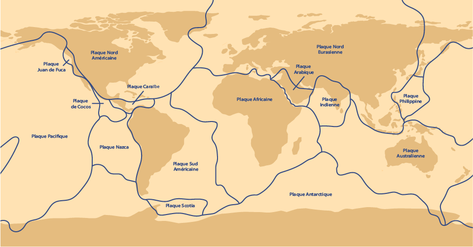
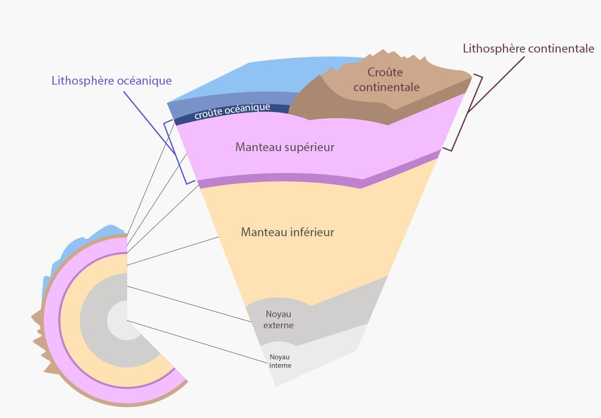
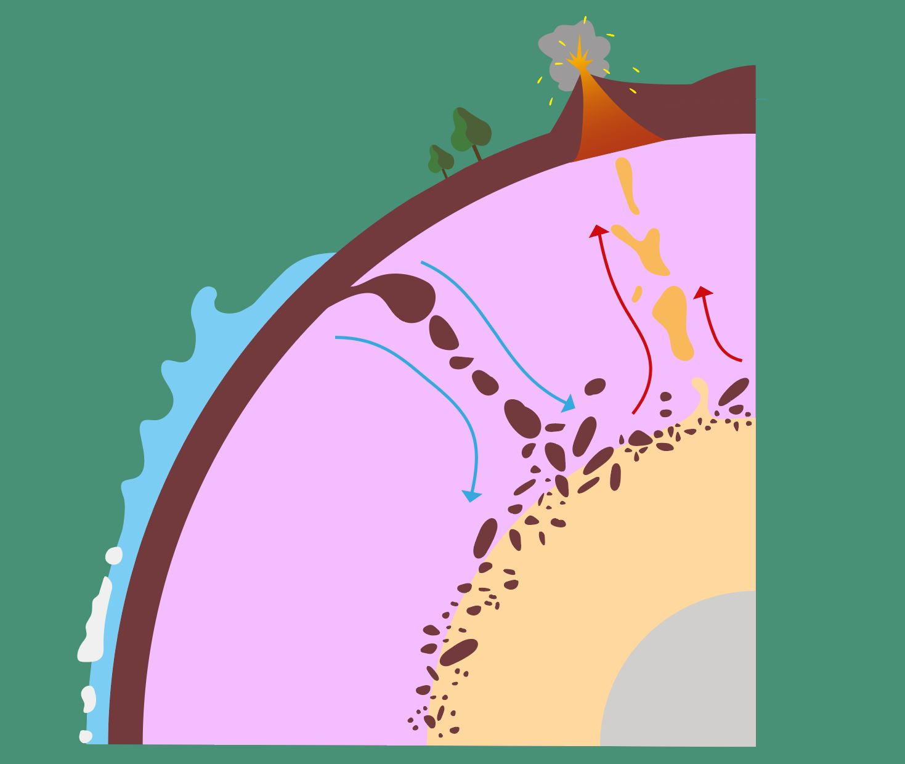
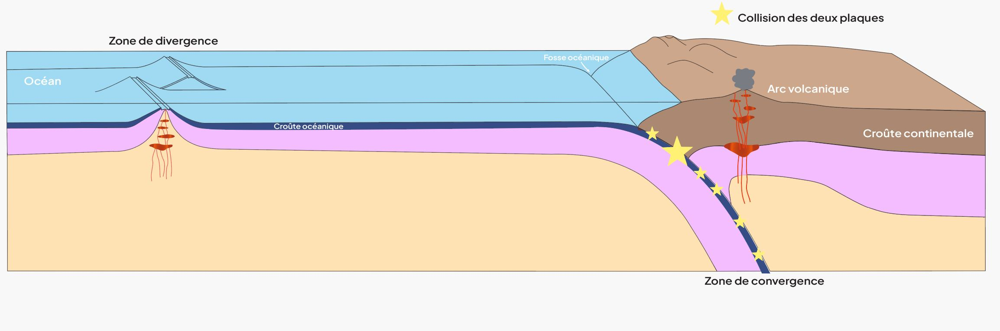

• Structure interne de la Terre
Les relevés issus de grands tremblements de terre ont révélé que la structure interne de la Terre était divisée en 4 couches principales : la croûte océanique et continentale, le manteau terrestre, le noyau externe et le noyau interne.
Lithosphère
La lithosphère est un terme employé pour désigner la partie rigide de la Terre (la croûte et le manteau supérieur).
Elle se distingue en deux autres termes : la lithosphère continentale (composée de la croûte continentale et du manteau supérieur) et la lithosphère océanique (composée de la croûte océanique et du manteau supérieur).
La lithosphère se divise en 15 plaques tectoniques majeures qui se déplacent à la surface du globe.

Le manteau terrestre représente 82% du volume terrestre total. Celui-ci est divisé en 3 parties : le manteau supérieur rigide, le manteau inférieur ductile (malléable) et la zone de transition entre les deux.
L’asthénosphère, située sous la lithosphère, est une zone désignant une partie inférieure du manteau terrestre partiellement fondue et ductile, s’étend jusqu’à environ 700km de profondeur.
Le noyau externe est principalement composé de nickel et de fer. Le fer et le nickel en fusion forment ensemble un fluide conducteur, sous l’effet des hautes températures. Ce fluide induit des mouvements internes rapides, à l’origine d’un effet dynamo. Cet effet permet la génération et le maintien du champ magnétique terrestre.
Le noyau interne est une partie solide située au centre de la Terre. Il est également constitué de fer et de nickel.

Manteau terrestre
Le manteau terrestre joue un rôle clé dans la tectonique des plaques grâce aux courants de convection qui déplacent les plaques tectoniques.
Au plus profond du manteau inférieur, la température avoisine les 3500 °C. En remontant vers la surface, cette chaleur diminue progressivement pour atteindre environ 1000 °C à la frontière entre manteau et croûte terrestre.
Cette différence de température provoque la remontée des roches chaudes et peu denses du manteau.
Cependant, au fur et à mesure de leur ascension, ces roches refroidissent, deviennent plus denses, et finissent par redescendre dans le manteau.

Ces mouvements sont à l’origine de la dérive des continents, des séismes et du volcanisme.
Le manteau transfère également une partie de la chaleur interne de la Terre vers la surface grâce à eux.
Lorsque certaines roches fondent partiellement sous l’effet de la chaleur et de la pression du manteau, elles forment du magma.
Ce magma peut remonter à la surface et alimenter l’activité volcanique, responsable de la formation de la croûte océanique et du volcanisme.
Les mouvements de convections du manteau entraînent l’apparition de deux types de zones : les zones de divergence (dorsales océaniques) qui écartent les plaques tectoniques l’une de l’autre sous les océans et les zones de convergence (zone de subduction) où une plaque océanique plus dense sous une plaque continentale moins dense.

Après cette introduction, la première partie de l’exposition est consacrée au métamorphisme des roches, un phénomène qui varie selon s’il se produit sous les océans ou près des continents.